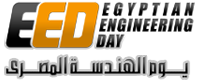

Yahya Hussain Ezzeldin
Extracurricular Activities
IEEE Egyptian Engineering Day (EED) [2009 - 2014]

The Egyptian Engineering Day is an annual summit that facilitates the opportunity for the best of the engineering graduation projects from all over Egypt to be implemented. Every year, EED features an expo for the graduation projects in the field of engineering from different Egyptian universities. Add to that, a great crowd of visitors to the expo and you get a wonderful recipe for knowledge exchange and constructive assessment of engineering effort done by the students.
Vice-Chairman, IEEE Egyptian Engineering Day 2014 (March 2014 - September 2014)
Logisitics Lead, IEEE Egyptian Engineering Day 2013 (September 2013)
Logistics Sub-Lead, IEEE Egyptian Engineering Day 2012 (September 2012)
Logistics Security Member, IEEE Egyptian Engineering Day 2012 (September 2011)
Database Keeper, IEEE Egyptian Engineering Day (August 2009)
Event Website:
www.eed.egRoles in the Event:
IEEE Alexandria Student Branch [2008 - 2014]
IEEE Alexandria Student Branch (Also, IEEE Alex SB) is a student branch under Alexandria Subsection of Egypt Section of the Institute of Electrical and Electronics Engineers (IEEE). The student branch is part of Alexandria University which is the main educational institution under which it operates. Most of the branch members are from Electrical Engineering Dept., and some members are also from Computers and Systems Engineering Dept, and Mechanical Engineering Dept.
Student Activities Mentor, IEEE Alexandria Student Branch (Oct 2011 - Present)
ITW '12 Project Manager, IEEE Alexandria Student Branch (Feb 2012 - Oct 2012)
Executive Committee Member, IEEE Alexandria Student Branch (Jan 2011 - Sep 2011)
Website Committee Lead, IEEE Alexandria Student Branch (May 2010 - Sep 2011)
Linguistic Editor in Chief, IEEE Alexandria Student Branch (Sep 2009 - Sep 2011)